com_c <- st_centroid(com)#> Warning: st_centroid assumes attributes are constant over geometriesmf_map(com)
mf_map(com_c, add = TRUE, cex = 1.2, col = "red", pch = 20)
com_c <- st_centroid(com)#> Warning: st_centroid assumes attributes are constant over geometriesmf_map(com)
mf_map(com_c, add = TRUE, cex = 1.2, col = "red", pch = 20)
dep_46 <- st_union(com)
mf_map(com, col = "lightblue")
mf_map(dep_46, col = NA, border = "red", lwd = 2, add = TRUE)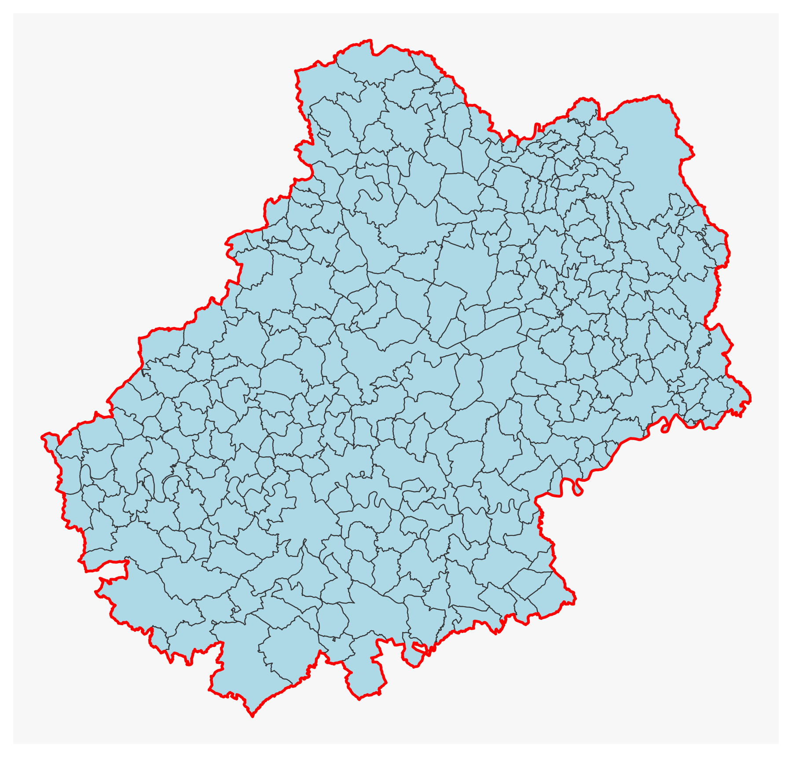
tapply()# variable servant à agréger les polygones
i <- com$STATUT
com_u <- st_sf(
STATUT = tapply(X = com$STATUT , INDEX = i, FUN = head, 1),
POPULATION = tapply(X = com$POPULATION , INDEX = i, FUN = sum),
geometry = tapply(X = com , INDEX = i, FUN = st_union),
crs = st_crs(com)
) aggregate()com_u <- aggregate(
x = com["POPULATION"],
by = list(STATUT = com$STATUT),
FUN = sum
)dplyrlibrary(dplyr)#>
#> Attaching package: 'dplyr'#> The following objects are masked from 'package:stats':
#>
#> filter, lag#> The following objects are masked from 'package:base':
#>
#> intersect, setdiff, setequal, unioncom_u <- com |>
group_by(STATUT) |>
summarise(POPULATION = sum(POPULATION))La fonction st_buffer() permet de construire des zones tampons. La distance est exprimée en unité de la projection utilisée (st_crs(x)$units).
gramat <- com[com$NOM_COM == "Gramat", ]
gramat_b <- st_buffer(x = gramat, dist = 5000)
mf_map(gramat_b, col = "lightblue", lwd=2, border = "red")
mf_map(gramat, add = TRUE, lwd = 2)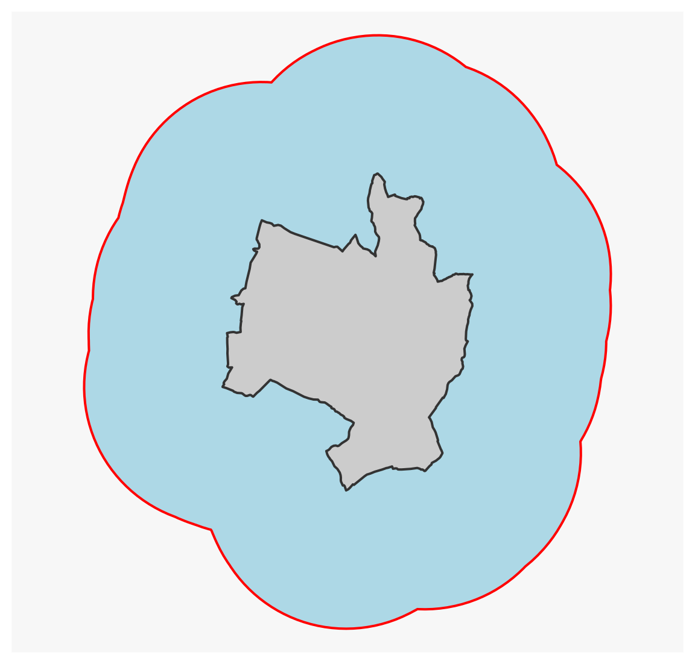
En utilisant la fonction st_intersection(), on peut découper une couche par une autre.
# création d'une zone tampon autour du centroide de la commune de Gramat
zone <- st_geometry(gramat) |>
st_centroid() |>
st_buffer(10000)
mf_map(com)
mf_map(zone, border = "red", col = NA, lwd = 2, add = TRUE)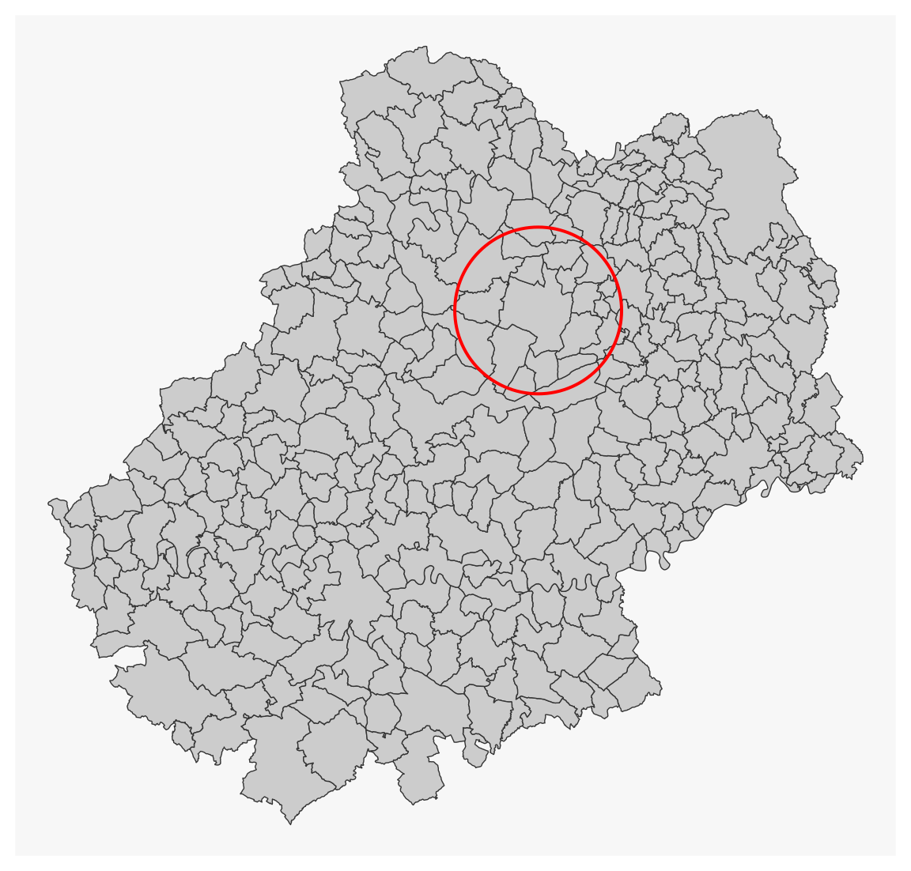
com_z <- st_intersection(x = com, y = zone)#> Warning: attribute variables are assumed to be spatially constant throughout
#> all geometriesmf_map(com)
mf_map(com_z, col = "red", border = "green", add = TRUE)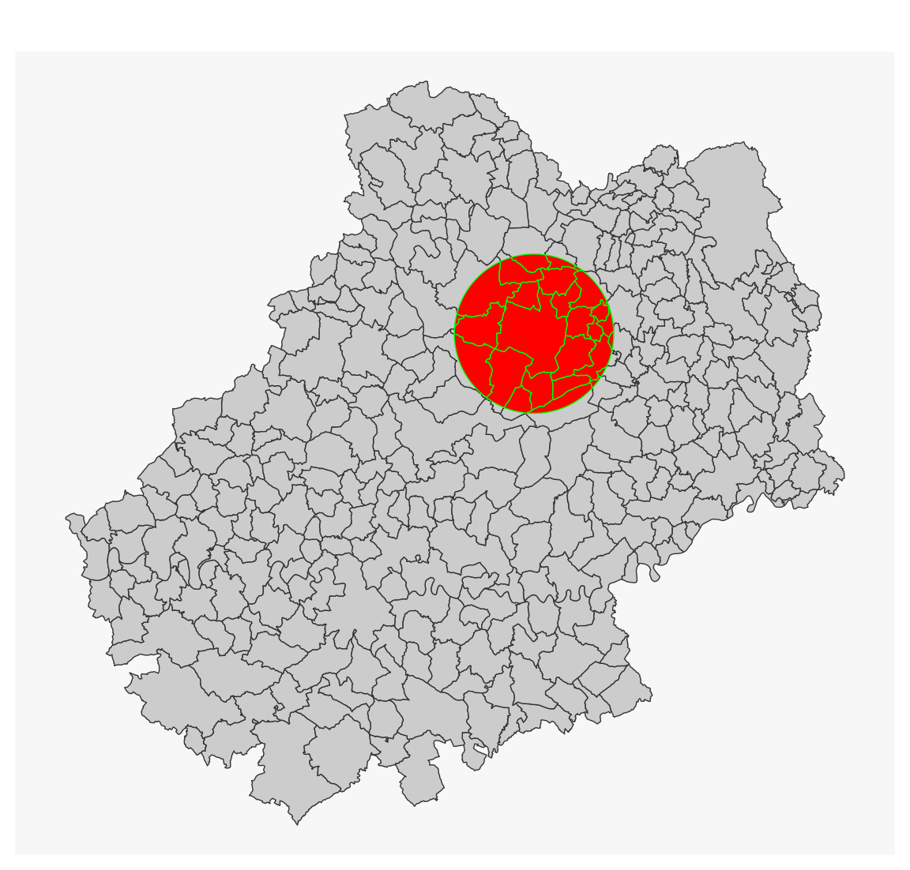
mf_map(com_z)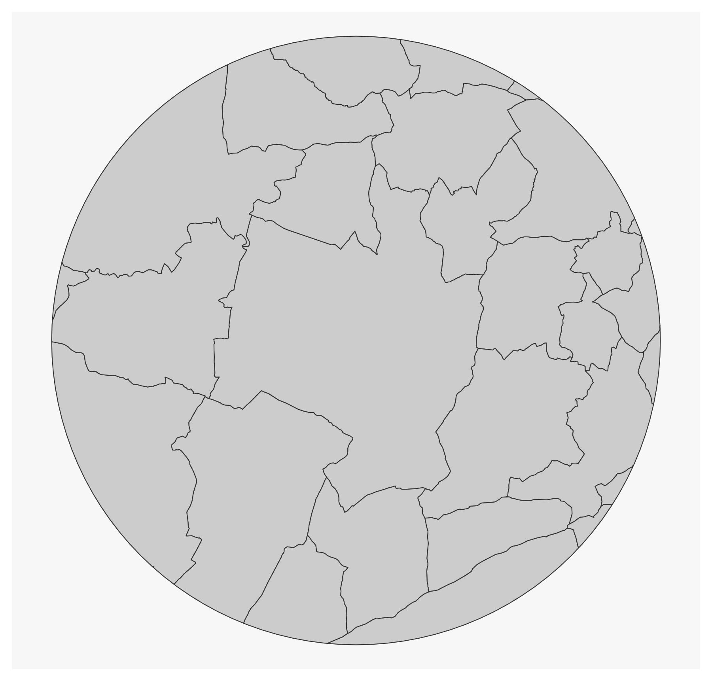
La fonction st_make_grid() permet de créer une grille régulière. La fonction produit un objet sfc, il faut ensuite utiliser la fonction st_sf() pour transformer cet objet sfc en objet sf. Lors de cette transformation nous rajoutons ici une colonne d’identifiants uniques.
# Création de la grille
grid <- st_make_grid(x = com, cellsize = 5000)
# Ajout d'un identifiant unique
grid <- st_sf(ID = 1:length(grid), geom = grid)
mf_map(grid, col = "grey", border = "white")
mf_map(com, col = NA, border = "grey50", add = TRUE)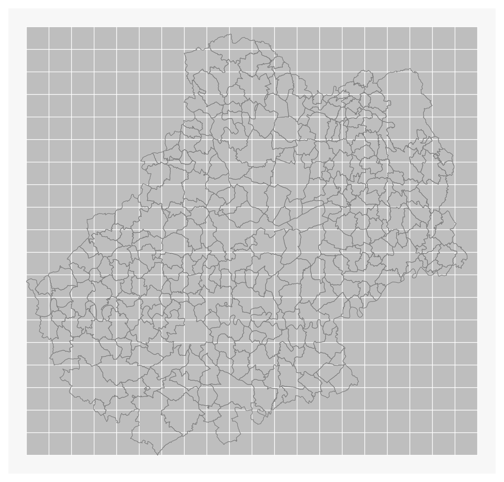
Sélection des carreaux de la grille qui intersectent le département avec st_filter().
grid <- st_filter(grid, dep_46, .predicate = st_intersects)
# Import d'une couche géographique ponctuelle des restaurants du Lot
restaurant <- st_read("data/lot.gpkg", layer = "restaurants", quiet = TRUE)
mf_map(grid, col = "grey", border = "white")
mf_map(restaurant, pch = 20, col = "red", cex = .5, add = TRUE)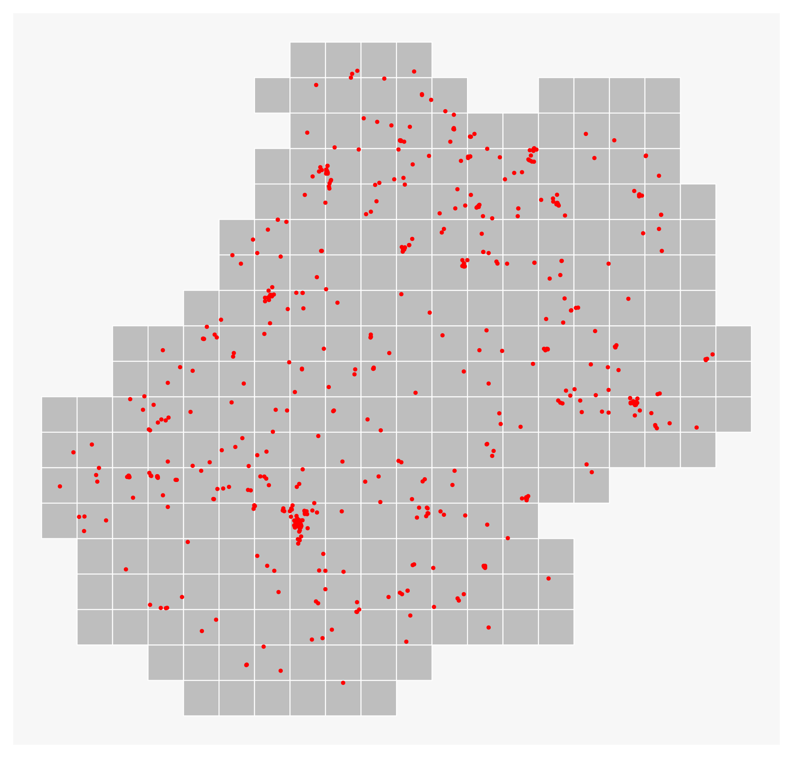
Nous utilisons ensuite la fonction st_intersects(..., sparse = TRUE) qui nous permettra d’avoir pour chaque élément de l’objet grid la liste des éléments (via leurs indexes) de l’objet restaurant qui se trouvent à l’intérieur.
inter <- st_intersects(grid, restaurant, sparse = TRUE)
length(inter) == nrow(grid)#> [1] TRUEPour compter le nombre de restaurants il suffit donc de reporter la longueur de chacun des éléments de cette liste.
grid$nb_restaurant <- lengths(inter)
mf_map(grid)
mf_map(grid, var = "nb_restaurant", type = "prop")#> 94 '0' values are not plotted on the map.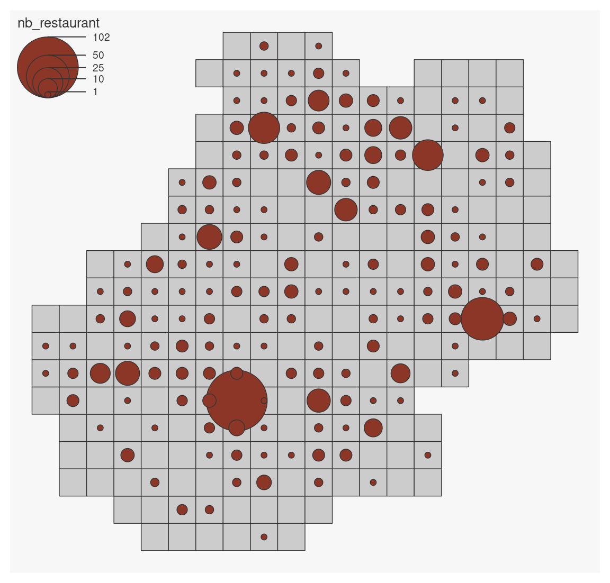
Ici nous voulons résumer l’information contenue dans une couche de points dans des polygones. Nous voulons connaître l’altitude minimale et maximale de chaque communes.
Nous commencons par importer une couche de points d’altitude, la couche elevations du fichier lot.gpkg.
elev <- st_read("data/lot.gpkg", "elevations", quiet = TRUE)
mf_map(elev, "elevation", "choro",
breaks = c(80, seq(100, 700, by = 100), 742),
pal = hcl.colors(8, "Terrain2"),
pch = 21, leg_pos = "topleft", cex = .75)
L’objectif est d’agréger les valeurs de ces points (les altitudes contenues dans le champ elevation) dans les communes du Lot.
En utilisant la fonction st_join() nous pouvons récupérer les attributs des communes dans lesquelles se trouvent les points.
inter <- st_join(x = elev, y = com[, "INSEE_COM"])
inter#> Simple feature collection with 5228 features and 2 fields
#> Geometry type: POINT
#> Dimension: XY
#> Bounding box: xmin: 540333.3 ymin: 6347372 xmax: 637333.3 ymax: 6439372
#> Projected CRS: RGF93 v1 / Lambert-93
#> First 10 features:
#> elevation INSEE_COM geom
#> 1 308.8546 46083 POINT (584333.3 6439372)
#> 2 304.6855 46083 POINT (582333.3 6438372)
#> 3 290.6638 46083 POINT (583333.3 6438372)
#> 4 295.0353 46083 POINT (584333.3 6438372)
#> 5 297.6773 46083 POINT (587333.3 6438372)
#> 6 257.7393 46083 POINT (588333.3 6438372)
#> 7 310.1883 46083 POINT (580333.3 6437372)
#> 8 305.0571 46083 POINT (581333.3 6437372)
#> 9 298.5876 46083 POINT (582333.3 6437372)
#> 10 287.6990 46083 POINT (583333.3 6437372)Nous pouvons ensuite utiliser la fonction aggregate() pour agréger les altitudes par communes, d’abord l’altitude minimale, puis l’altitude maximale.
# x : la variable que l'on veut agréger
# by : la variable qui servira à agréger
# FUN : la fonction à utiliser lors de l'agrégation
alti_min <- aggregate(x = list(alt_min = inter$elevation),
by = list(INSEE_COM = inter$INSEE_COM),
FUN = "min")
alti_max <- aggregate(x = list(alt_max = inter$elevation),
by = list(INSEE_COM = inter$INSEE_COM),
FUN = "max")
head(alti_max, n = 3)#> INSEE_COM alt_max
#> 1 46001 302.4913
#> 2 46002 393.9218
#> 3 46003 376.6632On peut ensuite combiner ces résultats à la couche des communes (avec la fonction merge()).
com <- merge(com, alti_min, by = "INSEE_COM", all.x = TRUE)
com <- merge(com, alti_max, by = "INSEE_COM", all.x = TRUE)
head(com, n = 3)#> Simple feature collection with 3 features and 14 fields
#> Geometry type: MULTIPOLYGON
#> Dimension: XY
#> Bounding box: xmin: 557759.2 ymin: 6371852 xmax: 607179 ymax: 6418606
#> Projected CRS: RGF93 v1 / Lambert-93
#> INSEE_COM NOM_COM STATUT POPULATION AGR_H AGR_F IND_H
#> 1 46001 Albas Commune simple 522 4.978581 0.000000 4.936153
#> 2 46002 Albiac Commune simple 67 0.000000 9.589041 0.000000
#> 3 46003 Alvignac Commune simple 706 10.419682 0.000000 10.419682
#> IND_F BTP_H BTP_F TER_H TER_F alt_min alt_max
#> 1 0.000000 9.957527 0 44.917145 34.681799 109.5772 302.4913
#> 2 0.000000 4.794521 0 4.794521 9.589041 363.4579 393.9218
#> 3 5.209841 10.419682 0 57.308249 78.147612 258.8378 376.6632
#> geom
#> 1 MULTIPOLYGON (((559262 6371...
#> 2 MULTIPOLYGON (((605540.7 64...
#> 3 MULTIPOLYGON (((593707.7 64...bks <- c(80, seq(100, 700, by = 100), 742)
cols <- hcl.colors(8, "Terrain2")
mf_map(com, "alt_min", "choro", breaks = bks, pal = cols)
mf_map(com, "alt_max", "choro", breaks = bks, pal = cols)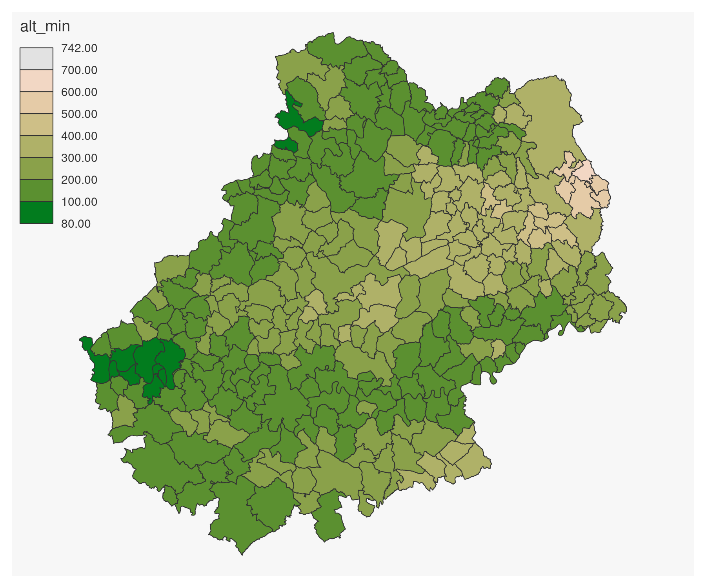
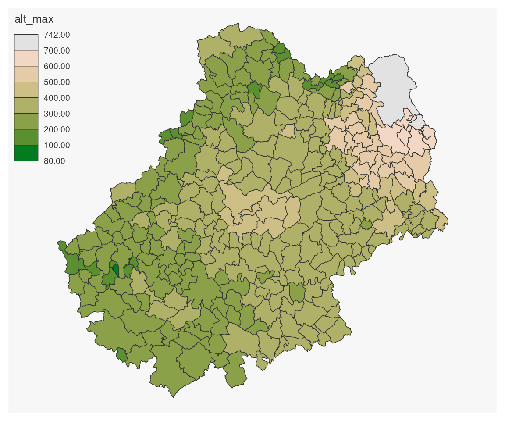
 Le package
Le package rmapshaper (Teucher et Russell, 2023) s’appuie sur la bibliothèque JavaScript Mapshaper (Bloch, 2013) pour proposer plusieurs méthodes de simplification des géométries qui respectent la topologie.
L’argument keep permet d’indiquer le niveau de simplification. L’argument keep_shapes permet de conserver tous les polygones quand le niveau de simplification est élevé.
library("rmapshaper")
com_simp1 <- ms_simplify(com, keep = 0.01 , keep_shapes = TRUE)
com_simp2 <- ms_simplify(com, keep = 0.001, keep_shapes = TRUE)
mf_map(com)
mf_map(com_simp1)
mf_map(com_simp2)
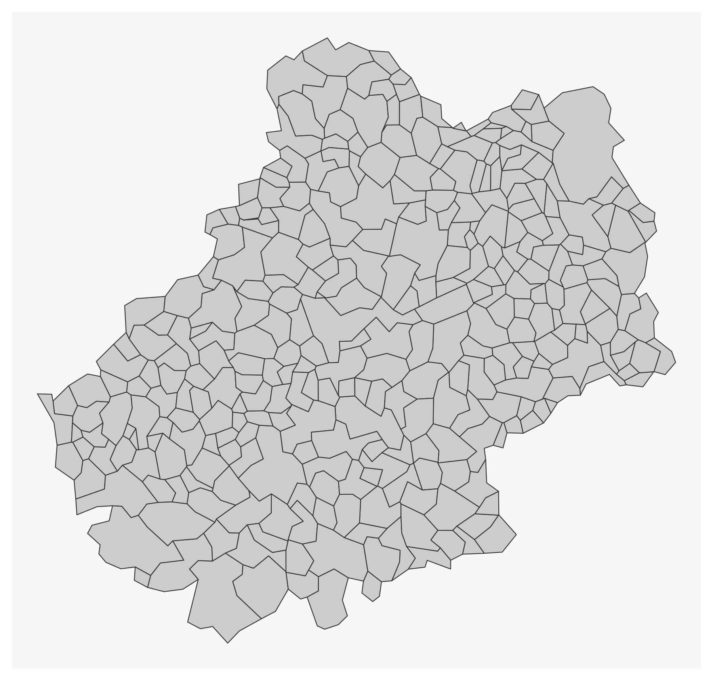
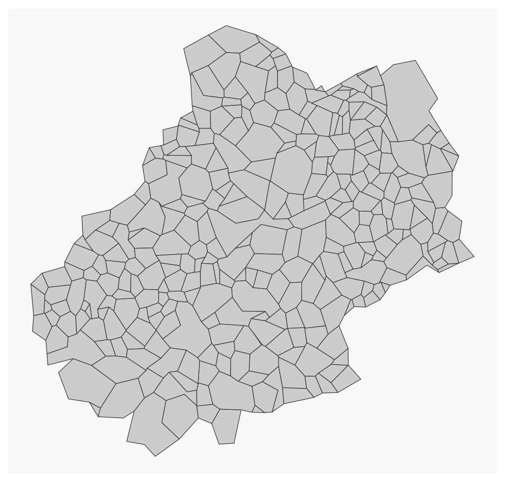
Calculez le nombre de restaurants par commune.
Quelles communes ont plus de 10 restaurants et moins de 1000 habitants ?
Créez une carte où vous afficherez toutes les communes en gris et les communes sélectionnées plus haut en rouge.